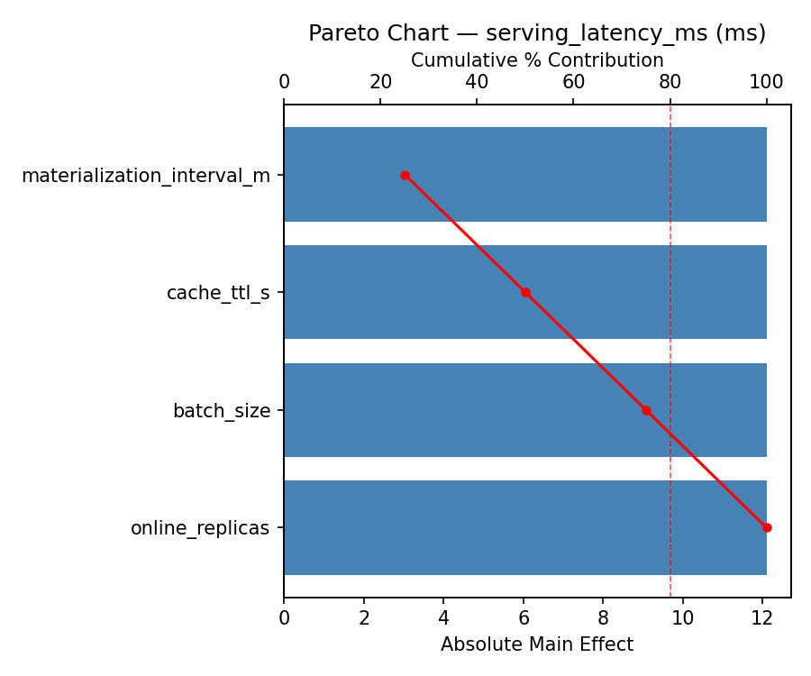
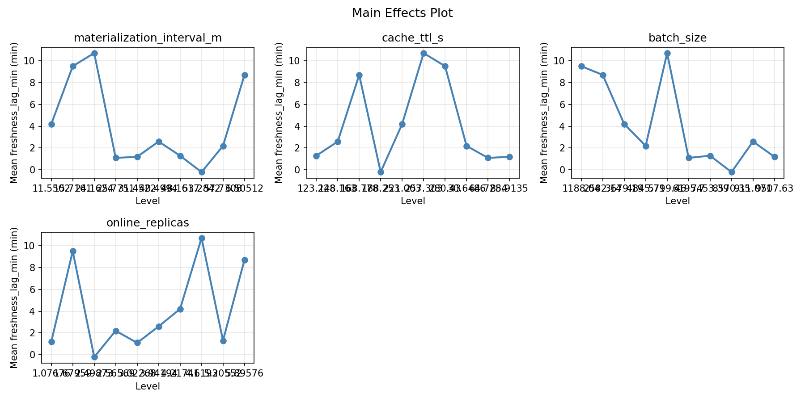
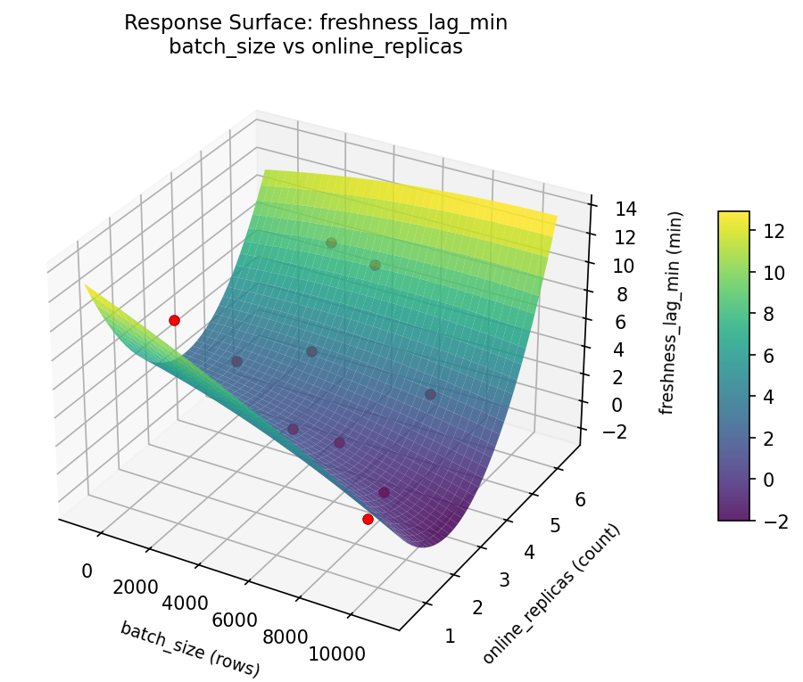
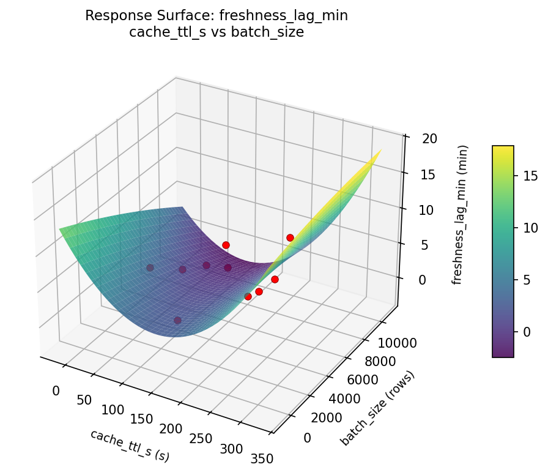
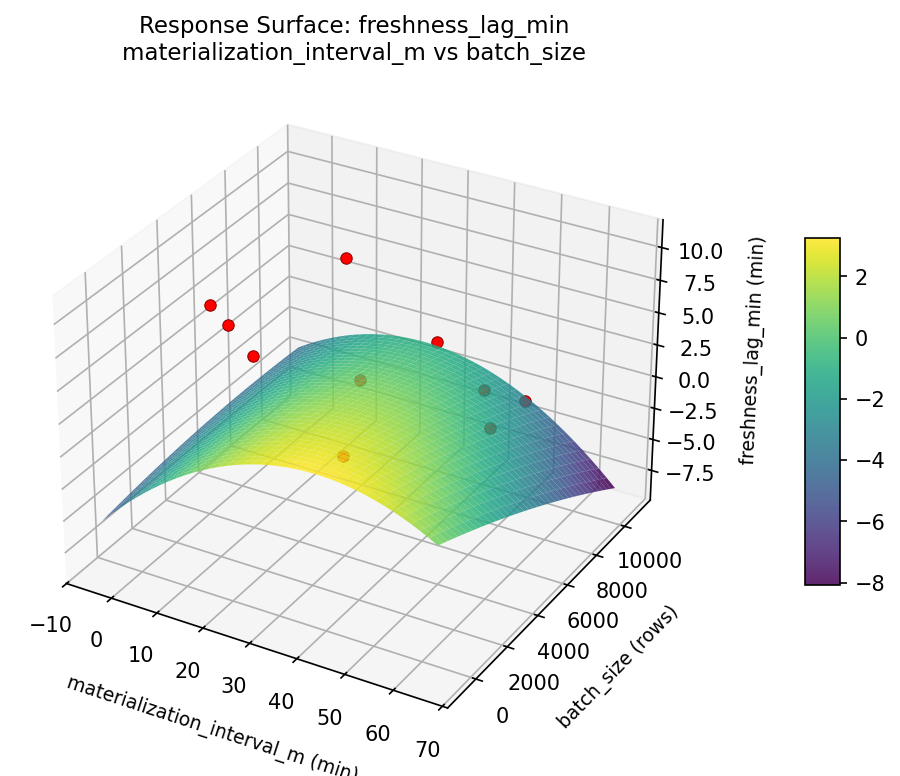
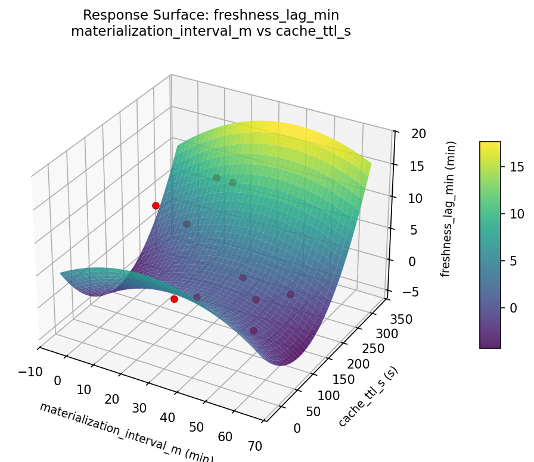
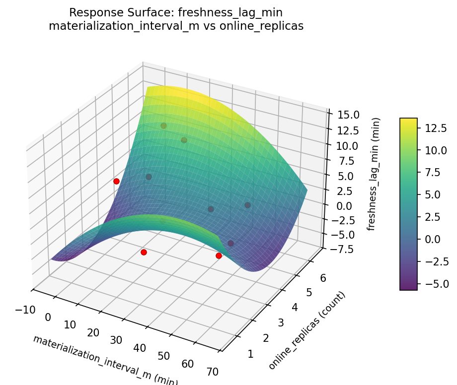
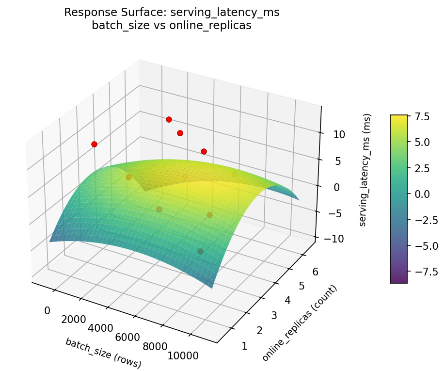
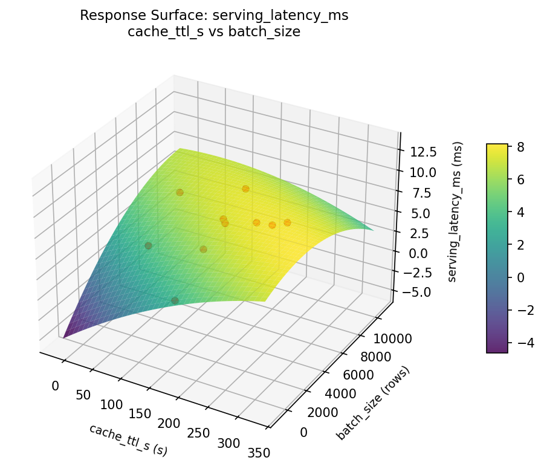
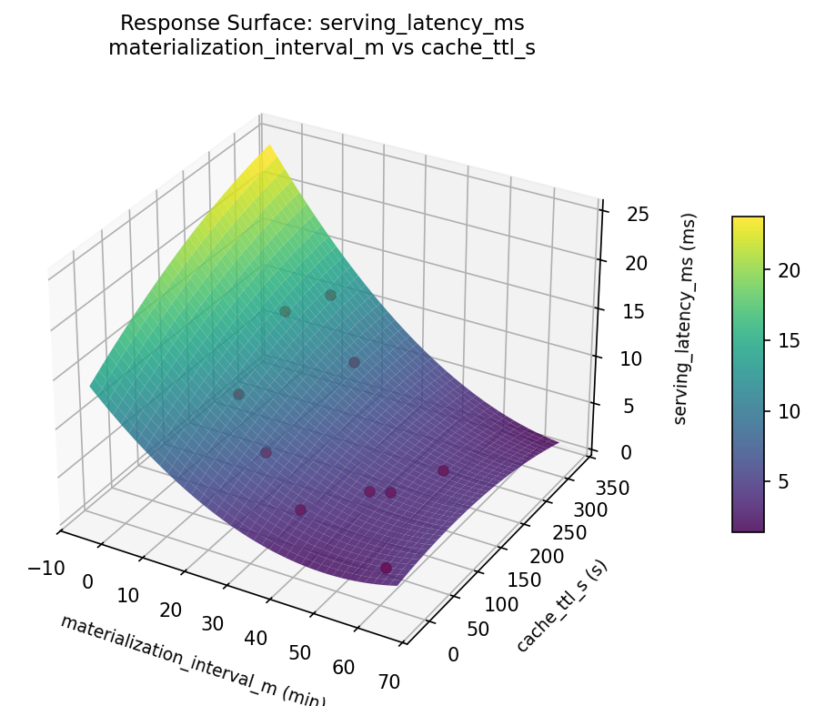

Summary
This experiment investigates feature store freshness. Latin Hypercube of 4 feature store parameters for serving latency and feature freshness.
The design varies 4 factors: materialization interval m (min), ranging from 1 to 60, cache ttl s (s), ranging from 10 to 300, batch size (rows), ranging from 100 to 10000, and online replicas (count), ranging from 1 to 6. The goal is to optimize 2 responses: serving latency ms (ms) (minimize) and freshness lag min (min) (minimize). Fixed conditions held constant across all runs include offline store = s3_parquet, online store = redis.
Latin Hypercube Sampling was used to space 10 runs across the 4-dimensional factor space with good coverage and minimal gaps, making it ideal for computer experiments where the response surface may be complex.
Key Findings
For serving latency ms, the most influential factors were materialization interval m (25.0%), cache ttl s (25.0%), batch size (25.0%). The best observed value was 1.1 (at materialization interval m = 30.454, cache ttl s = 159.182, batch size = 6457.01).
For freshness lag min, the most influential factors were materialization interval m (25.0%), cache ttl s (25.0%), batch size (25.0%). The best observed value was -0.2 (at materialization interval m = 50.4989, cache ttl s = 216.562, batch size = 2053.29).
Recommended Next Steps
- Consider whether any fixed factors should be varied in a future study.
Experimental Setup
Factors
| Factor | Low | High | Unit |
|---|
materialization_interval_m | 1 | 60 | min |
cache_ttl_s | 10 | 300 | s |
batch_size | 100 | 10000 | rows |
online_replicas | 1 | 6 | count |
Fixed: offline_store = s3_parquet, online_store = redis
Responses
| Response | Direction | Unit |
|---|
serving_latency_ms | ↓ minimize | ms |
freshness_lag_min | ↓ minimize | min |
Configuration
{
"metadata": {
"name": "Feature Store Freshness",
"description": "Latin Hypercube of 4 feature store parameters for serving latency and feature freshness"
},
"factors": [
{
"name": "materialization_interval_m",
"levels": [
"1",
"60"
],
"type": "continuous",
"unit": "min"
},
{
"name": "cache_ttl_s",
"levels": [
"10",
"300"
],
"type": "continuous",
"unit": "s"
},
{
"name": "batch_size",
"levels": [
"100",
"10000"
],
"type": "continuous",
"unit": "rows"
},
{
"name": "online_replicas",
"levels": [
"1",
"6"
],
"type": "continuous",
"unit": "count"
}
],
"fixed_factors": {
"offline_store": "s3_parquet",
"online_store": "redis"
},
"responses": [
{
"name": "serving_latency_ms",
"optimize": "minimize",
"unit": "ms"
},
{
"name": "freshness_lag_min",
"optimize": "minimize",
"unit": "min"
}
],
"settings": {
"operation": "latin_hypercube",
"test_script": "use_cases/46_feature_store_freshness/sim.sh"
}
}
Experimental Matrix
The Latin Hypercube Design produces 10 runs. Each row is one experiment with specific factor settings.
| Run | materialization_interval_m | cache_ttl_s | batch_size | online_replicas |
|---|
| 1 | 3.48466 | 174.125 | 3206.91 | 4.3331 |
| 2 | 10.2115 | 97.1072 | 2549.14 | 2.96158 |
| 3 | 53.1044 | 11.4958 | 5819.77 | 5.58544 |
| 4 | 36.5087 | 241.497 | 7332.17 | 2.13419 |
| 5 | 18.3814 | 250.01 | 1460.38 | 3.03638 |
| 6 | 55.5849 | 61.2812 | 8621.88 | 5.05216 |
| 7 | 27.9376 | 193.139 | 393.775 | 1.3587 |
| 8 | 19.2863 | 74.2829 | 4389.37 | 1.64944 |
| 9 | 35.2299 | 153.737 | 6874.59 | 4.53939 |
| 10 | 45.7042 | 272.48 | 9823.5 | 3.66666 |
Step-by-Step Workflow
1
Preview the design
$ python doe.py info --config use_cases/46_feature_store_freshness/config.json
2
Generate the runner script
$ python doe.py generate --config use_cases/46_feature_store_freshness/config.json \
--output use_cases/46_feature_store_freshness/results/run.sh --seed 42
3
Execute the experiments
$ bash use_cases/46_feature_store_freshness/results/run.sh
4
Analyze results
$ python doe.py analyze --config use_cases/46_feature_store_freshness/config.json
5
Get optimization recommendations
$ python doe.py optimize --config use_cases/46_feature_store_freshness/config.json
6
Multi-objective optimization
With 2 competing responses, use --multi to find the best compromise via Derringer–Suich desirability.
$ python doe.py optimize --config use_cases/46_feature_store_freshness/config.json --multi
7
Generate the HTML report
$ python doe.py report --config use_cases/46_feature_store_freshness/config.json \
--output use_cases/46_feature_store_freshness/results/report.html
Features Exercised
| Feature | Value |
|---|
| Design type | latin_hypercube |
| Factor types | continuous (all 4) |
| Arg style | double-dash |
| Responses | 2 (serving_latency_ms ↓, freshness_lag_min ↓) |
| Total runs | 10 |
Analysis Results
Generated from actual experiment runs using the DOE Helper Tool.
Response: serving_latency_ms
Top factors: materialization_interval_m (25.0%), cache_ttl_s (25.0%), batch_size (25.0%).
ANOVA
| Source | DF | SS | MS | F | p-value |
|---|
| Source | DF | SS | MS | F | p-value |
| materialization_interval_m | 9 | 186.1210 | 20.6801 | | |
| cache_ttl_s | 9 | 186.1210 | 20.6801 | | |
| batch_size | 9 | 186.1210 | 20.6801 | | |
| online_replicas | 9 | 186.1210 | 20.6801 | | |
| Error | (Lenth | PSE) | 0 | 0.0000 | 0.0000 |
| Total | 9 | 186.1210 | 20.6801 | | |
Pareto Chart

Main Effects Plot

Response: freshness_lag_min
Top factors: materialization_interval_m (25.0%), cache_ttl_s (25.0%), batch_size (25.0%).
ANOVA
| Source | DF | SS | MS | F | p-value |
|---|
| Source | DF | SS | MS | F | p-value |
| materialization_interval_m | 9 | 143.4810 | 15.9423 | | |
| cache_ttl_s | 9 | 143.4810 | 15.9423 | | |
| batch_size | 9 | 143.4810 | 15.9423 | | |
| online_replicas | 9 | 143.4810 | 15.9423 | | |
| Error | (Lenth | PSE) | 0 | 0.0000 | 0.0000 |
| Total | 9 | 143.4810 | 15.9423 | | |
Main Effects Plot

Response Surface Plots
3D surfaces fitted with quadratic RSM. Red dots are observed data points.
freshness lag min batch size vs online replicas

freshness lag min cache ttl s vs batch size

freshness lag min cache ttl s vs online replicas

freshness lag min materialization interval m vs batch size

freshness lag min materialization interval m vs cache ttl s

freshness lag min materialization interval m vs online replicas

serving latency ms batch size vs online replicas

serving latency ms cache ttl s vs batch size

serving latency ms cache ttl s vs online replicas

serving latency ms materialization interval m vs batch size

serving latency ms materialization interval m vs cache ttl s

serving latency ms materialization interval m vs online replicas

Multi-Objective Optimization
When responses compete, Derringer–Suich desirability finds the best compromise.
Each response is scaled to a 0–1 desirability, then combined via a weighted geometric mean.
Overall Desirability
D = 0.9226
Per-Response Desirability
| Response | Weight | Desirability | Predicted | Dir |
|---|
serving_latency_ms |
1.0 |
|
2.92 0.8176 2.92 ms |
↓ |
freshness_lag_min |
1.5 |
|
-14.03 1.0000 -14.03 min |
↓ |
Recommended Settings
| Factor | Value |
|---|
materialization_interval_m | 4.082 min |
cache_ttl_s | 274 s |
batch_size | 303.5 rows |
online_replicas | 1.197 count |
Source: from RSM model prediction
Trade-off Summary
Sacrifice = how much worse than single-objective best.
| Response | Predicted | Best Observed | Sacrifice |
|---|
freshness_lag_min | -14.03 | -0.20 | -13.83 |
Top 3 Runs by Desirability
| Run | D | Factor Settings |
|---|
| #6 | 0.8827 | materialization_interval_m=57.6986, cache_ttl_s=121.675, batch_size=4196.45, online_replicas=1.45069 |
| #3 | 0.8210 | materialization_interval_m=21.9028, cache_ttl_s=85.4765, batch_size=3904.84, online_replicas=3.70097 |
Model Quality
| Response | R² | Type |
|---|
freshness_lag_min | 0.5155 | linear |
Full Multi-Objective Output
============================================================
MULTI-OBJECTIVE OPTIMIZATION
Method: Derringer-Suich Desirability Function
============================================================
Overall desirability: D = 0.9226
Response Weight Desirability Predicted Direction
---------------------------------------------------------------------
serving_latency_ms 1.0 0.8176 2.92 ms ↓
freshness_lag_min 1.5 1.0000 -14.03 min ↓
Recommended settings:
materialization_interval_m = 4.082 min
cache_ttl_s = 274 s
batch_size = 303.5 rows
online_replicas = 1.197 count
(from RSM model prediction)
Trade-off summary:
serving_latency_ms: 2.92 (best observed: 1.10, sacrifice: +1.82)
freshness_lag_min: -14.03 (best observed: -0.20, sacrifice: -13.83)
Model quality:
serving_latency_ms: R² = 0.0356 (linear)
freshness_lag_min: R² = 0.5155 (linear)
Top 3 observed runs by overall desirability:
1. Run #1 (D=0.8846): materialization_interval_m=37.9003, cache_ttl_s=229.527, batch_size=2744.53, online_replicas=1.9435
2. Run #6 (D=0.8827): materialization_interval_m=57.6986, cache_ttl_s=121.675, batch_size=4196.45, online_replicas=1.45069
3. Run #3 (D=0.8210): materialization_interval_m=21.9028, cache_ttl_s=85.4765, batch_size=3904.84, online_replicas=3.70097
Full Analysis Output
=== Main Effects: serving_latency_ms ===
Factor Effect Std Error % Contribution
--------------------------------------------------------------
materialization_interval_m 12.1000 1.4381 25.0%
cache_ttl_s 12.1000 1.4381 25.0%
batch_size 12.1000 1.4381 25.0%
online_replicas 12.1000 1.4381 25.0%
=== ANOVA Table: serving_latency_ms ===
Source DF SS MS F p-value
-----------------------------------------------------------------------------
materialization_interval_m 9 186.1210 20.6801
cache_ttl_s 9 186.1210 20.6801
batch_size 9 186.1210 20.6801
online_replicas 9 186.1210 20.6801
Error (Lenth PSE) 0 0.0000 0.0000
Total 9 186.1210 20.6801
Note: Error estimated using Lenth's pseudo-standard-error (unreplicated design)
=== Summary Statistics: serving_latency_ms ===
materialization_interval_m:
Level N Mean Std Min Max
------------------------------------------------------------
13.2315 1 13.2000 0.0000 13.2000 13.2000
19.6107 1 3.3000 0.0000 3.3000 3.3000
29.9703 1 12.9000 0.0000 12.9000 12.9000
32.8403 1 1.1000 0.0000 1.1000 1.1000
41.9946 1 7.8000 0.0000 7.8000 7.8000
43.1314 1 6.1000 0.0000 6.1000 6.1000
51.6083 1 1.4000 0.0000 1.4000 1.4000
56.6106 1 3.4000 0.0000 3.4000 3.4000
6.57456 1 7.3000 0.0000 7.3000 7.3000
7.91815 1 1.2000 0.0000 1.2000 1.2000
cache_ttl_s:
Level N Mean Std Min Max
------------------------------------------------------------
111.098 1 3.4000 0.0000 3.4000 3.4000
152.889 1 1.4000 0.0000 1.4000 1.4000
166.403 1 3.3000 0.0000 3.3000 3.3000
18.8013 1 7.3000 0.0000 7.3000 7.3000
184.09 1 1.2000 0.0000 1.2000 1.2000
226.696 1 6.1000 0.0000 6.1000 6.1000
248.347 1 13.2000 0.0000 13.2000 13.2000
275.594 1 12.9000 0.0000 12.9000 12.9000
60.3162 1 1.1000 0.0000 1.1000 1.1000
77.2363 1 7.8000 0.0000 7.8000 7.8000
batch_size:
Level N Mean Std Min Max
------------------------------------------------------------
1147.61 1 1.2000 0.0000 1.2000 1.2000
2241.38 1 7.8000 0.0000 7.8000 7.8000
3614.44 1 6.1000 0.0000 6.1000 6.1000
5013.95 1 1.4000 0.0000 1.4000 1.4000
5364.96 1 7.3000 0.0000 7.3000 7.3000
677.44 1 3.4000 0.0000 3.4000 3.4000
7006.46 1 1.1000 0.0000 1.1000 1.1000
7367.17 1 12.9000 0.0000 12.9000 12.9000
8437.28 1 13.2000 0.0000 13.2000 13.2000
9661.69 1 3.3000 0.0000 3.3000 3.3000
online_replicas:
Level N Mean Std Min Max
------------------------------------------------------------
1.41436 1 13.2000 0.0000 13.2000 13.2000
1.78414 1 6.1000 0.0000 6.1000 6.1000
2.36262 1 7.3000 0.0000 7.3000 7.3000
2.71013 1 1.4000 0.0000 1.4000 1.4000
3.107 1 1.1000 0.0000 1.1000 1.1000
3.9288 1 7.8000 0.0000 7.8000 7.8000
4.475 1 3.4000 0.0000 3.4000 3.4000
4.70238 1 3.3000 0.0000 3.3000 3.3000
5.37663 1 12.9000 0.0000 12.9000 12.9000
5.85564 1 1.2000 0.0000 1.2000 1.2000
=== Main Effects: freshness_lag_min ===
Factor Effect Std Error % Contribution
--------------------------------------------------------------
materialization_interval_m 10.9000 1.2626 25.0%
cache_ttl_s 10.9000 1.2626 25.0%
batch_size 10.9000 1.2626 25.0%
online_replicas 10.9000 1.2626 25.0%
=== ANOVA Table: freshness_lag_min ===
Source DF SS MS F p-value
-----------------------------------------------------------------------------
materialization_interval_m 9 143.4810 15.9423
cache_ttl_s 9 143.4810 15.9423
batch_size 9 143.4810 15.9423
online_replicas 9 143.4810 15.9423
Error (Lenth PSE) 0 0.0000 0.0000
Total 9 143.4810 15.9423
Note: Error estimated using Lenth's pseudo-standard-error (unreplicated design)
=== Summary Statistics: freshness_lag_min ===
materialization_interval_m:
Level N Mean Std Min Max
------------------------------------------------------------
13.2315 1 4.2000 0.0000 4.2000 4.2000
19.6107 1 -0.2000 0.0000 -0.2000 -0.2000
29.9703 1 9.5000 0.0000 9.5000 9.5000
32.8403 1 1.2000 0.0000 1.2000 1.2000
41.9946 1 10.7000 0.0000 10.7000 10.7000
43.1314 1 8.7000 0.0000 8.7000 8.7000
51.6083 1 2.2000 0.0000 2.2000 2.2000
56.6106 1 1.3000 0.0000 1.3000 1.3000
6.57456 1 1.1000 0.0000 1.1000 1.1000
7.91815 1 2.6000 0.0000 2.6000 2.6000
cache_ttl_s:
Level N Mean Std Min Max
------------------------------------------------------------
111.098 1 1.3000 0.0000 1.3000 1.3000
152.889 1 2.2000 0.0000 2.2000 2.2000
166.403 1 -0.2000 0.0000 -0.2000 -0.2000
18.8013 1 1.1000 0.0000 1.1000 1.1000
184.09 1 2.6000 0.0000 2.6000 2.6000
226.696 1 8.7000 0.0000 8.7000 8.7000
248.347 1 4.2000 0.0000 4.2000 4.2000
275.594 1 9.5000 0.0000 9.5000 9.5000
60.3162 1 1.2000 0.0000 1.2000 1.2000
77.2363 1 10.7000 0.0000 10.7000 10.7000
batch_size:
Level N Mean Std Min Max
------------------------------------------------------------
1147.61 1 2.6000 0.0000 2.6000 2.6000
2241.38 1 10.7000 0.0000 10.7000 10.7000
3614.44 1 8.7000 0.0000 8.7000 8.7000
5013.95 1 2.2000 0.0000 2.2000 2.2000
5364.96 1 1.1000 0.0000 1.1000 1.1000
677.44 1 1.3000 0.0000 1.3000 1.3000
7006.46 1 1.2000 0.0000 1.2000 1.2000
7367.17 1 9.5000 0.0000 9.5000 9.5000
8437.28 1 4.2000 0.0000 4.2000 4.2000
9661.69 1 -0.2000 0.0000 -0.2000 -0.2000
online_replicas:
Level N Mean Std Min Max
------------------------------------------------------------
1.41436 1 4.2000 0.0000 4.2000 4.2000
1.78414 1 8.7000 0.0000 8.7000 8.7000
2.36262 1 1.1000 0.0000 1.1000 1.1000
2.71013 1 2.2000 0.0000 2.2000 2.2000
3.107 1 1.2000 0.0000 1.2000 1.2000
3.9288 1 10.7000 0.0000 10.7000 10.7000
4.475 1 1.3000 0.0000 1.3000 1.3000
4.70238 1 -0.2000 0.0000 -0.2000 -0.2000
5.37663 1 9.5000 0.0000 9.5000 9.5000
5.85564 1 2.6000 0.0000 2.6000 2.6000
Optimization Recommendations
=== Optimization: serving_latency_ms ===
Direction: minimize
Best observed run: #6
materialization_interval_m = 30.454
cache_ttl_s = 159.182
batch_size = 6457.01
online_replicas = 4.1819
Value: 1.1
RSM Model (linear, R² = 0.2064, Adj R² = -0.4284):
Coefficients:
intercept +5.8133
materialization_interval_m -2.3291
cache_ttl_s +2.5806
batch_size -0.0255
online_replicas -2.7685
Predicted optimum (from linear model, at observed points):
materialization_interval_m = 7.55748
cache_ttl_s = 295.617
batch_size = 920.328
online_replicas = 5.0657
Predicted value: 8.4147
Surface optimum (via L-BFGS-B, linear model):
materialization_interval_m = 60
cache_ttl_s = 10
batch_size = 10000
online_replicas = 6
Predicted value: -1.8905
Model quality: Weak fit — consider adding center points or using a different design.
Factor importance:
1. materialization_interval_m (effect: 12.1, contribution: 25.0%)
2. cache_ttl_s (effect: 12.1, contribution: 25.0%)
3. batch_size (effect: 12.1, contribution: 25.0%)
4. online_replicas (effect: 12.1, contribution: 25.0%)
=== Optimization: freshness_lag_min ===
Direction: minimize
Best observed run: #1
materialization_interval_m = 50.4989
cache_ttl_s = 216.562
batch_size = 2053.29
online_replicas = 1.34479
Value: -0.2
RSM Model (linear, R² = 0.3054, Adj R² = -0.2502):
Coefficients:
intercept +4.1041
materialization_interval_m -2.5873
cache_ttl_s +3.3329
batch_size +5.0751
online_replicas -1.9636
Predicted optimum (from linear model, at observed points):
materialization_interval_m = 24.3669
cache_ttl_s = 151.09
batch_size = 9355.81
online_replicas = 2.92883
Predicted value: 9.4154
Surface optimum (via L-BFGS-B, linear model):
materialization_interval_m = 60
cache_ttl_s = 10
batch_size = 100
online_replicas = 6
Predicted value: -8.8548
Model quality: Weak fit — consider adding center points or using a different design.
Factor importance:
1. materialization_interval_m (effect: 10.9, contribution: 25.0%)
2. cache_ttl_s (effect: 10.9, contribution: 25.0%)
3. batch_size (effect: 10.9, contribution: 25.0%)
4. online_replicas (effect: 10.9, contribution: 25.0%)